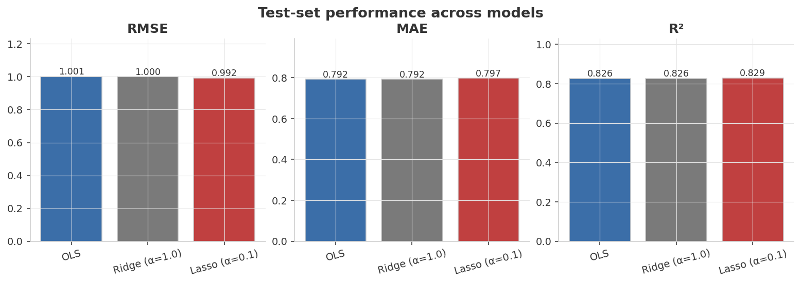
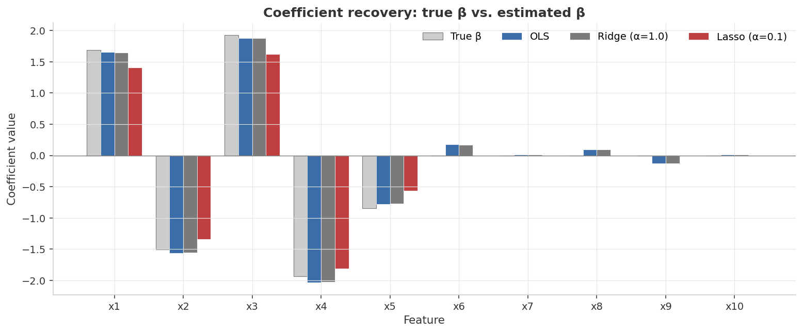
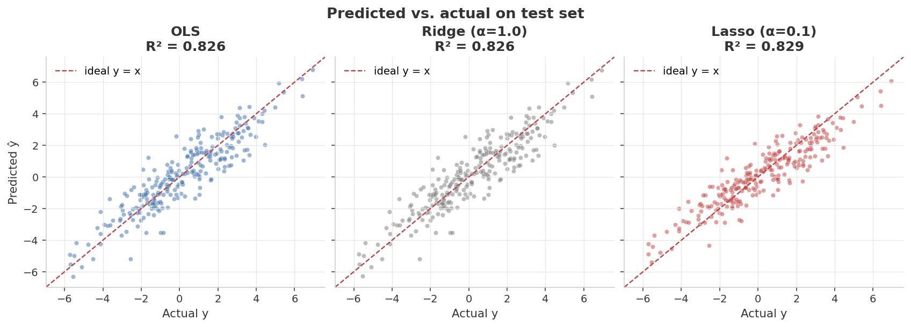
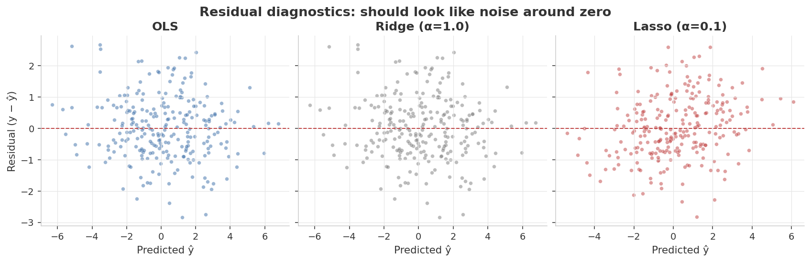
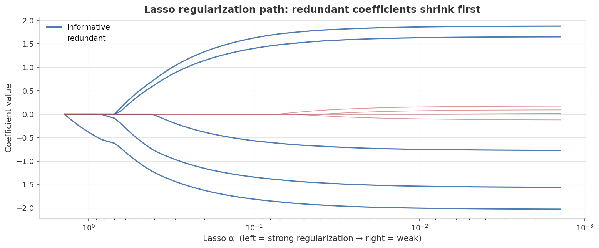

0.992
Best test RMSE
Lasso (α = 0.1)
0.829
Best test R²
Lasso (α = 0.1)
0.273
Closest β recovery
Ridge · ‖β̂ − β_true‖₂
Model scorecard
| Model | Test RMSE | Test MAE | Test R² | ‖β̂ − β_true‖₂ |
|---|---|---|---|---|
| OLS | 1.001 | 0.792 | 0.826 | 0.274 |
| Ridge α=1.0 | 1.000 | 0.792 | 0.826 | 0.273 |
| Lasso α=0.1 | 0.992 | 0.797 | 0.829 | 0.537 |
● navy = best in column ● orange = notably worse ● gray = neutral · values from
results/metrics.jsonHeadline finding: with this much training data, all three models predict equally well — but they disagree on how. Ridge stays closest to the true coefficients; Lasso wins test fit by deliberately zeroing the small ones. Holdout RMSE alone can't tell them apart — coefficient recovery against the known β can.
Visual diagnostics
1 · Test-set performance across models
With enough data, regularized and unregularized regression converge to nearly the same prediction quality.

2 · Coefficient recovery — the synthetic-data superpower
Gray bars = true β. Lasso cleanly zeros the 5 redundant features; OLS/Ridge nearly overlap.

3 · Predicted vs. actual
Points hug the y = x line across all three models.

4 · Residual diagnostics
Structureless cloud around zero — no systematic error.

5 · Lasso regularization path
Redundant-feature coefficients (red) die first as α grows; informative ones (blue) persist.

Dual-axis validation
Axis 1 — predictive accuracy (held-out test set)
All metrics on the 250-row test set the models never saw.
| Metric | What it measures | Reads as |
|---|---|---|
| RMSE | √mean squared error | ≈ noise floor 1.0 → at the irreducible limit |
| MAE | mean absolute error | typical error, robust to outliers |
| R² | variance explained | ~0.83 ceiling, capped by injected noise |
Axis 2 — coefficient recovery (only possible with synthetic data)
Did the model recover the true mechanism, not just predict well? Measured as ‖β̂ − β_true‖₂.
All three models land within 1% on RMSE, yet Lasso's β estimate is 2× further from the truth than Ridge's (0.537 vs 0.273). Two models can predict identically and understand the data very differently.
Full results
| Model | Test RMSE | Test MAE | Test R² | ‖β̂ − β_true‖₂ |
|---|---|---|---|---|
| OLS | 1.0013 | 0.7921 | 0.8261 | 0.2744 |
| Ridge (α=1.0) | 1.0004 | 0.7920 | 0.8264 | 0.2730 |
| Lasso (α=0.1) | 0.9919 | 0.7968 | 0.8293 | 0.5368 |
Determinism: a single
seed = 42 drives features, coefficients, noise, and the split. Seed caveat: "Lasso wins RMSE" is seed-dependent; the coefficient-recovery ordering (Ridge < OLS < Lasso) is the robust finding.Run it yourself
# 1. environment python3 -m venv .venv && source .venv/bin/activate pip install -r requirements.txt # 2. generate the synthetic dataset (deterministic) python generate_data.py # 3. train, evaluate, render the dashboard figures python train.py
Produces the five PNGs in
assets/ and the metric summary in results/metrics.json.Tweak the difficulty
DataConfig(
n_samples=1000,
n_informative=5, # features that actually matter
n_redundant=5, # pure noise — Lasso should drop these
correlation=0.6, # high values hurt OLS, help Ridge
noise_std=1.0,
seed=42,
)
Try
correlation=0.95 or n_samples=80 to see the regularizers visibly out-perform OLS.